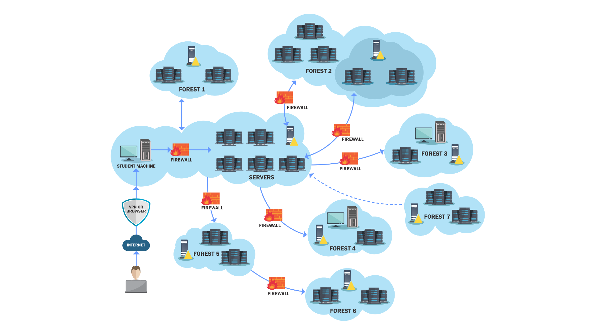
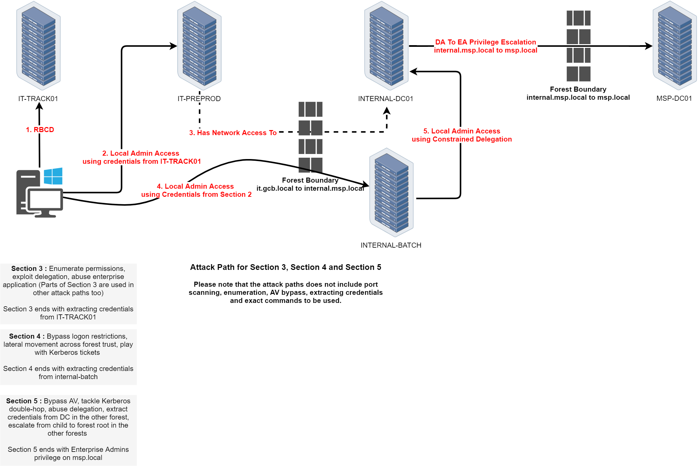
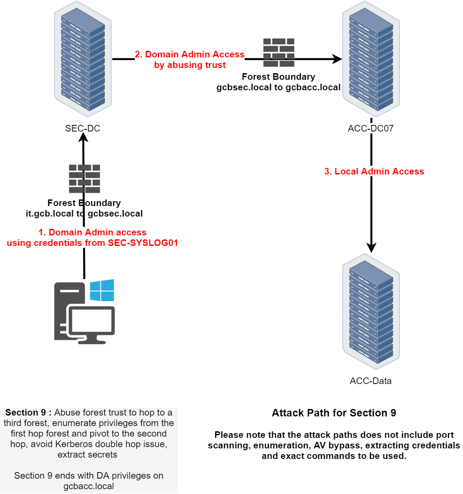
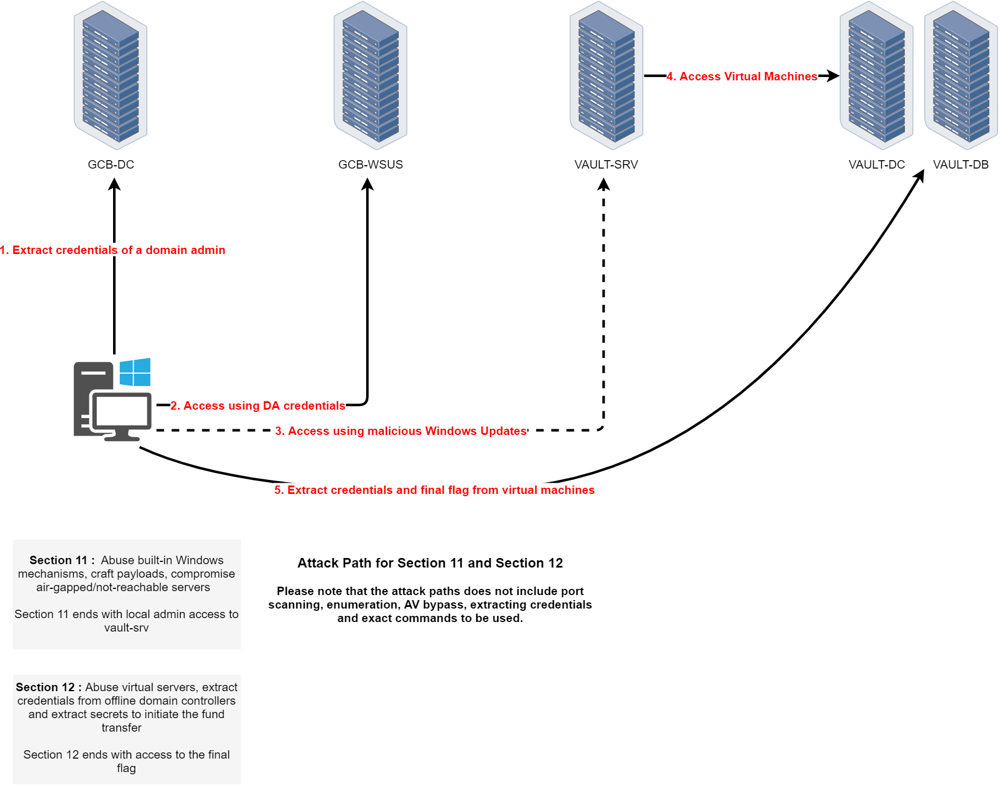

The CRTM (Certified Red Team Master) certification, offered by Altered Security, challenges offensive security professionals to demonstrate their mastery of advanced Red Teaming techniques in real-world environments.
The GCB (Global Central Bank) lab, part of the CRTM training, simulates a highly secured financial environment, reflecting realistic scenarios of Active Directory abuse, privilege escalation, and stealthy lateral movement across multiple forests.
Lab Environment Overview
The CRTM lab is a complex multi-forest environment representing a global financial organization. It includes multiple domain controllers, workstations, and specialized servers across different forest boundaries.
Attack Paths & Techniques
The CRTM certification covers advanced Red Teaming techniques including:
- Cross-Forest Attacks: Exploiting trust relationships between multiple Active Directory forests
- Kerberoast Attacks: Targeting service accounts across forest boundaries
- Constrained Delegation Abuse: Exploiting Kerberos delegation for lateral movement
- Credential Dumping: Advanced LSASS extraction techniques with various bypass methods
- ACL Abuse: Modifying Access Control Lists for persistence and privilege escalation
- Domain Persistence: Golden tickets, DCSync attacks, and other persistence techniques
- Exchange Abuse: Exploiting Microsoft Exchange for privilege escalation
- WSUS Abuse: Leveraging Windows Update services for lateral movement
- Virtual Machine Manipulation: Hyper-V guest to host escalation techniques
- Multi-Forest Enumeration: Mapping trusts and attack paths across complex forest structures
Lab Phases
- Phase 1 (Sections 1/2): Initial enumeration and credential access in it.gcb.local
- Phase 2 (Sections 3/4/5): Cross-forest escalation from it.gcb.local to internal.msp.local to msp.local
- Phase 3 (Sections 3/6): Constrained delegation exploitation and finance domain escalation
- Phase 4 (Section 7): Exchange abuse and user simulation in gcbhr.local
- Phase 5 (Section 8): Security domain escalation with Defender bypass
- Phase 6 (Section 9): Multi-forest trust exploitation to gcbacc.local
- Phase 7 (Section 10): Enterprise Admin escalation and ACL abuse
- Phase 8 (Sections 11/12): WSUS abuse and vault domain compromise
The CRTM certification represents the pinnacle of Active Directory security assessment skills, requiring deep understanding of Windows authentication, Kerberos, and enterprise security mechanisms.